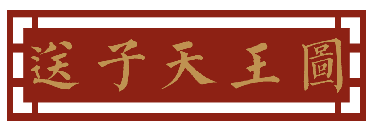
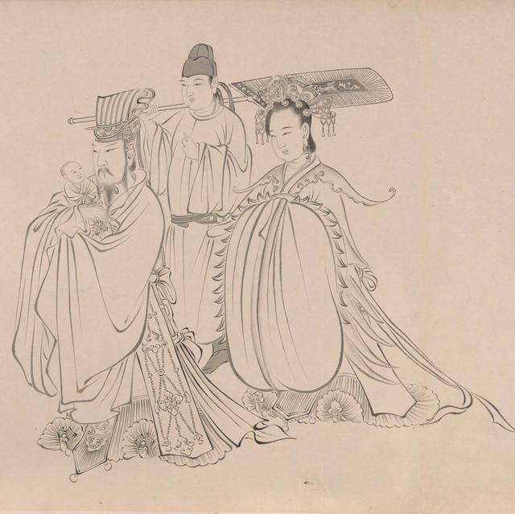

图中怀抱天子之人即为天王，他革带、侧面配绶。在唐朝，不仅男子如此，女子也配绶。按照服装的穿着场合，唐朝天子的服装可以分为礼服和常服。其中，唐朝天子服装，又可以做如下分类：
- 冕服：大裘冕、衮冕、鷩冕、毳冕、绣冕、玄冕，统称六冕。
- 冠服：通天冠、翼善冠（李世民自己发明的）
- 弁服：武弁、弁服（这里指皮制的弁服）
- 帻服：黑介帻、平巾帻
- 帽服：白纱帽
大裘冕，是天子服饰中规格最高、最为庄重的一款衣服，只在天子祭拜天神、地神的时候穿。“大裘冕”，顾名思义，就是身穿“大裘”，头戴“冕”。
《旧唐书﹒舆服志》中记载：“大裘冕，无旒，广八寸，长一尺六寸，玄裘纁里，已下广狭准此。金饰，玉簪导，以组为缨，色如其绶。裘以黑羔皮为之，玄领、褾、襟缘。朱裳，白纱中单，皁领，青褾、襈、裾、革带，玉钩、暐，大带，素带朱里，绀其外，上以朱，下以绿，纽用组也。蔽漆随裳。鹿卢玉具剑，火珠镖首。白玉双佩，玄组双大绶，六彩，玄、黄、赤、白、缥、绿、纯玄质，长二丈四尺，五百首，广一尺。小双绶长二尺一寸，色同大绶而首半之，间施三玉环。朱袜，赤舄。祀天神地祇则服之。”
大裘冕因为不是很实用，很快就被废置了，虽然令文上依旧保留，但实际上，唐朝皇帝很少穿着。唐朝的衣服令在唐初开始制定，武德四年实施（公元621年），显庆元年（公元656年）大裘冕被废，时隔仅短短的35年。在大唐近三百年的历史长河中，这35年显得太过匆匆，虽然大裘冕依周礼、遵古制、质古朴，但因其不够实用、不够美观而被废，取而代之的便是华丽丽的衮冕。
衮冕，在皇上众多礼服里排在第二位，仅次于大裘冕。诸祭祀及庙（各种祭祀和祭拜宗庙）、遣上将、征还、饮至（庆功宴）、践阼（即位登基）、加元服（冠礼）、纳后（册封皇后）、若元日受朝（农历正月初一大朝会），的时候穿着。显庆元年，李治同志听取了长孙无忌的建议，修改礼令，废大裘冕，改穿衮冕，自此之后，祭天地的时候，皇上也是穿衮冕的。
据《旧唐书﹒舆服志》中记载：“衮冕，金饰，垂白珠十二旒，以组为缨，色如其绶，黈纩充耳，玉簪导。玄衣，纁裳，十二章，八章在衣，日、月、星、龙、山、华虫、火、宗彝；四章在裳，藻、粉米、黼、黻，衣褾、领为升龙，织成为之也。各为六等，龙、山以下，每章一行，十二。白纱中单，黼领，青褾、襈、裾，黻。绣龙、山、火三章，余同上。革带、大带、剑、佩、绶与上同。舄加金饰。诸祭祀及庙、遣上将、征还、饮至、践阼、加元服、纳后、若元日受朝，则服之。”
衮冕，冕上用金饰，垂白玉珠串十二旒（请注意，衮冕服的冕上是有旒的），以组为缨，颜色跟绶带的颜色一样（黑色），黄绵所制的小球。悬于冠冕之上，垂两耳旁，以示不欲妄听是非，导以玉簪。黑衣，浅红色的裳，十二章纹，上衣有八章：日、月、星、龙、山、华虫、火、宗彝；裙子上绣有四种章纹：藻、粉米、黼、黻；衣服的袖口、衣领都绣以升龙的章纹。（十二章纹中，日、月、星分别绘制在衣服的左、右肩和后衣领下，寓意天子肩挑日月、背负七星）十二章纹中，龙、山及其之后的章纹，每种一行，一行十二个。内穿白纱中单，黼领（黼，十二章纹的一种，黑白相间的衣领），青色的袖口、衣缘、大襟，并绣以黻纹（黻，十二章纹的一种，青黑相间的花纹）。韨（蔽膝）上锈龙、山、火三章，其它的配饰，如：革带、大带、剑、佩、绶，都和大裘冕的一样。舄加金饰。 衮冕的穿着场合比较多，在皇帝众多礼服中属于最为华丽，上身率最高的。穿着场合：诸祭祀及庙（各种祭祀和祭拜宗庙）、遣上将、征还、饮至（庆功宴）、践阼（即位登基）、加元服（冠礼）、纳后、若元日受朝（农历正月初一大朝会），的时候穿着。显庆元年，李治修改礼令，废大裘冕，改穿衮冕，自此之后，祭天地的时候，皇上也是穿衮冕的。
常服，是唐朝天子众多服装中上身率最高的服装。常服，就是身上穿的窄袖、圆领袍衫，就是很家常、平民、接地气的服装了，上至天子，下到百姓，平时都可以穿，只不过赤黄色的袍衫只能皇帝穿，再配上折上头巾，九环带，六合靴，配成一套。自贞观之后，除了元日、冬至受朝及大祭祀之外，其它场合都只穿常服了。
《旧唐书 . 舆服志》：“其常服，赤黄袍衫，折上头巾，九环带，六合靴，皆起自魏、周，便于戎事。自贞观已后，非元日、冬至受朝及大祭祀，皆常服而己。”
“武德初，因隋旧制，天子宴服，亦名常服”，开始的时候只是黄色的袍衫，后来逐渐改用赤黄色，所以明文规定，士庶不能穿赤黄色的衣服。此后，赤黄色也就成了皇帝专用服色，也逐渐演变成了皇权的象征。唐玄宗时，安禄山称帝，穿的就是赤黄衫。五代后周末年，赵匡胤在陈桥发动兵变，诸将给他披上黄袍，拥立其为天子，这便是“黄袍加身”的由来。这里所指的都是赤黄色，其它的土黄色、浅黄色什么的，仍然是庶民的常用服色，并没有禁止。